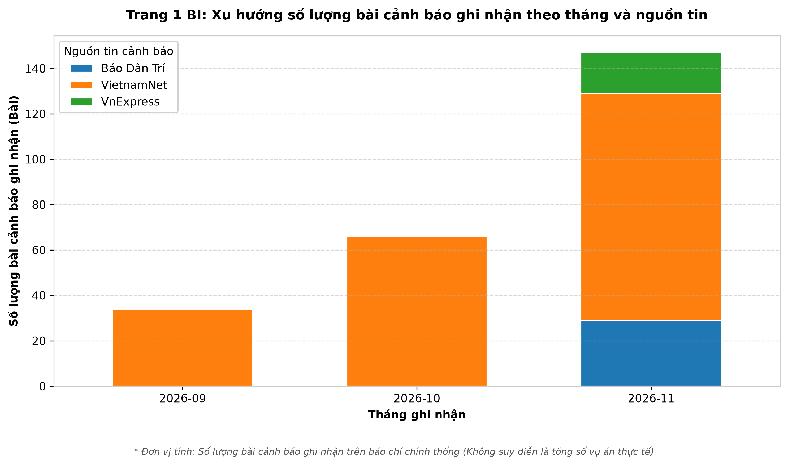
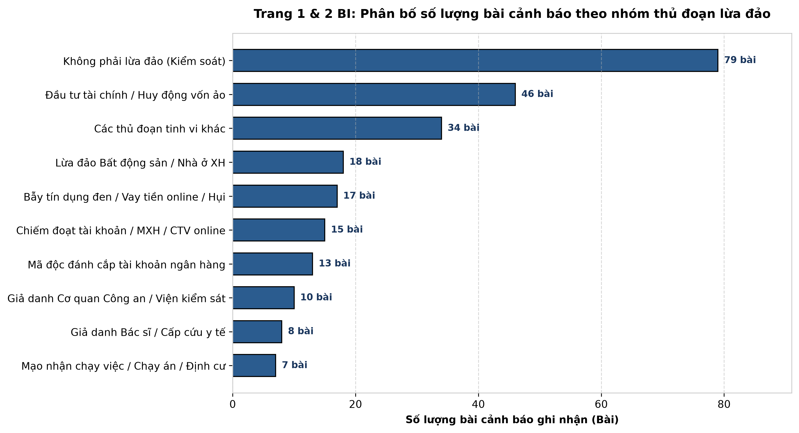
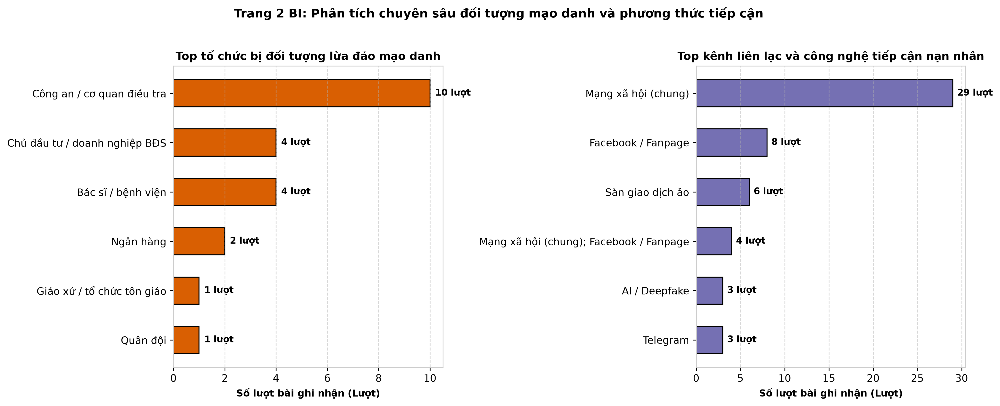
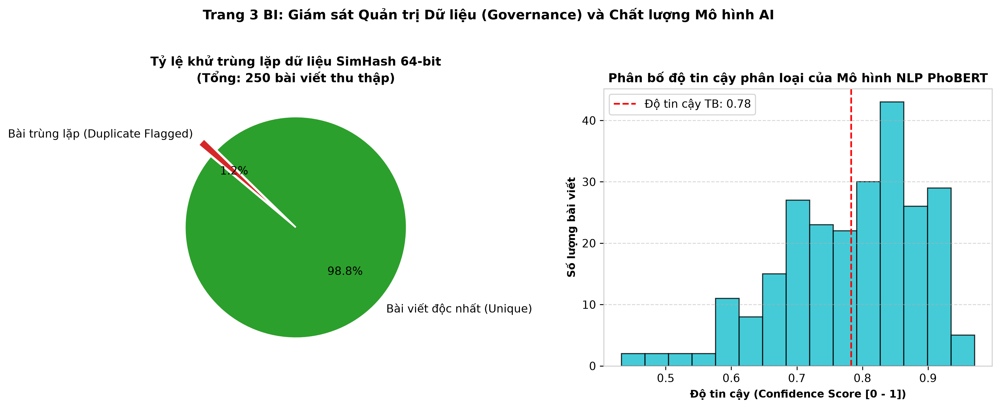
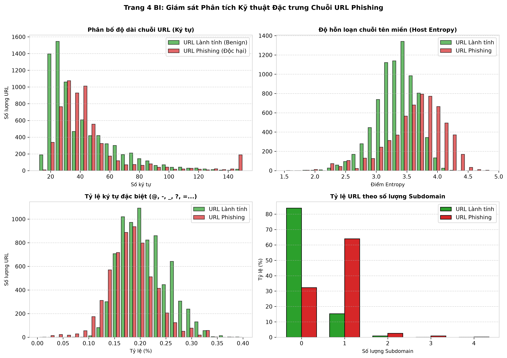

Hệ thống phân tích xu hướng lừa đảo trực tuyến và cảnh báo URL phishing | Nhóm 09 - 65HTTT





| STT | Tiêu chí kiểm toán đối soát | Kết quả SQL CSDL | Hiển thị trên Dashboard | Trạng thái kiểm tra |
|---|---|---|---|---|
| 1 | Tổng số bài cảnh báo cào thô | 250 bài | 250 bài | PASSED (Khớp 100%) |
| 2 | Số bài viết độc nhất (Sau khử trùng SimHash) | 247 bài | 247 bài | PASSED (Khớp 100%) |
| 3 | Số bài trùng lặp bị gắn cờ | 3 bài (1.2%) | 3 bài (1.2%) | PASSED (Khớp 100%) |
| 4 | Số bài báo VietnamNet | 200 bài | 200 bài | PASSED (Khớp 100%) |
| 5 | Số bài báo Dân Trí | 29 bài | 29 bài | PASSED (Khớp 100%) |
| 6 | Số bài báo VnExpress | 18 bài | 18 bài | PASSED (Khớp 100%) |
| 7 | Tổng số URL tập dữ liệu ML | 13.715 URL | 13.715 URL | PASSED (Khớp 100%) |
| 8 | Số URL Phishing có nhãn (Label 1) | 6.000 URL | 6.000 URL | PASSED (Khớp 100%) |
| 9 | Số URL Lành tính đối chứng (Label 0) | 7.715 URL | 7.715 URL | PASSED (Khớp 100%) |
-- Kiểm tra tính toàn vẹn của số lượng bài viết độc nhất
SELECT
'Kiểm tra bài viết độc nhất' AS audit_rule,
(SELECT COUNT(*) FROM news_articles WHERE is_duplicate = FALSE) AS db_unique_count,
247 AS dashboard_reported_count,
CASE WHEN (SELECT COUNT(*) FROM news_articles WHERE is_duplicate = FALSE) = 247
THEN 'PASSED (Khớp 100%)' ELSE 'FAILED' END AS audit_status;